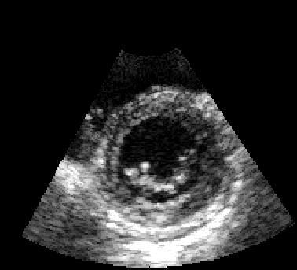
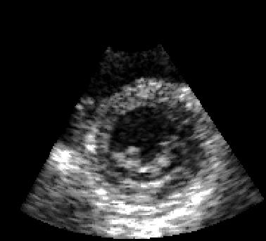
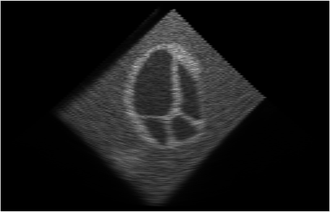
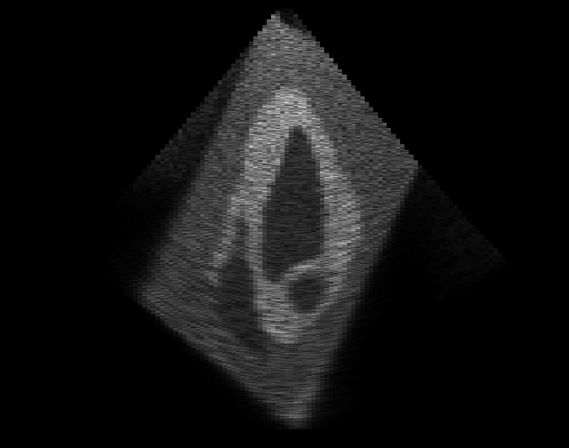
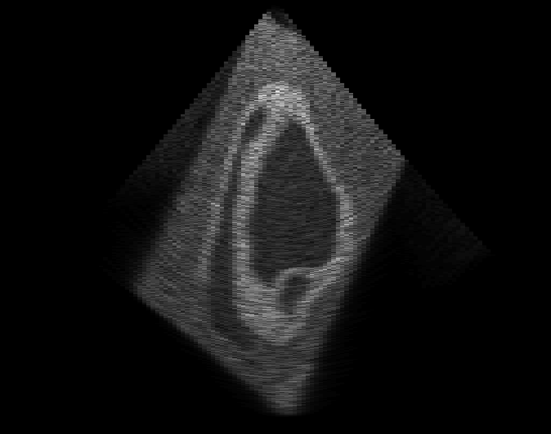
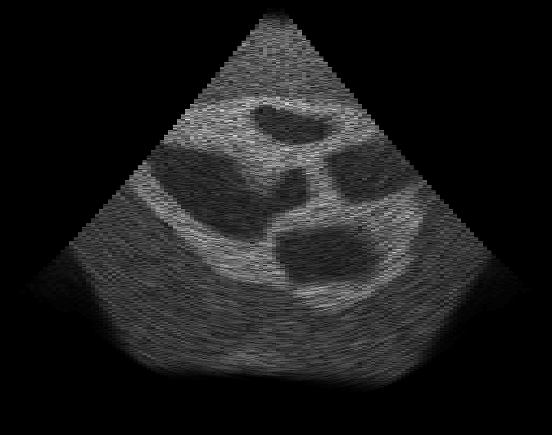
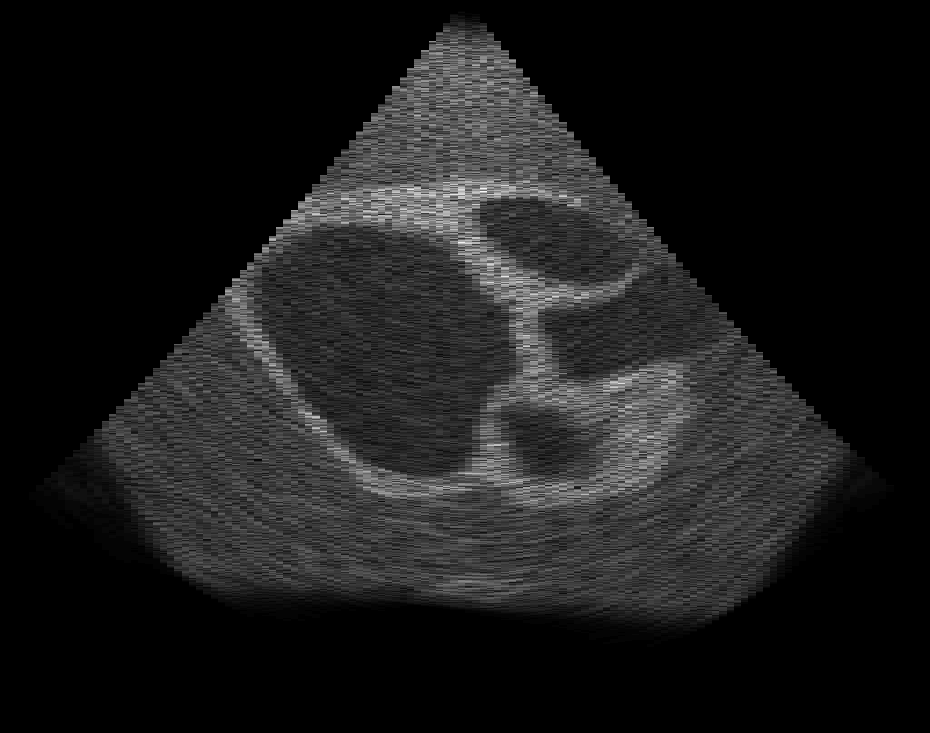
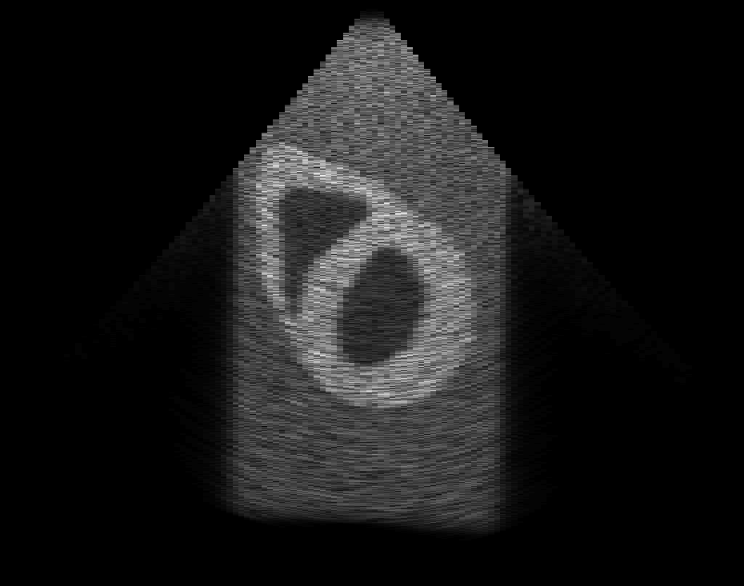
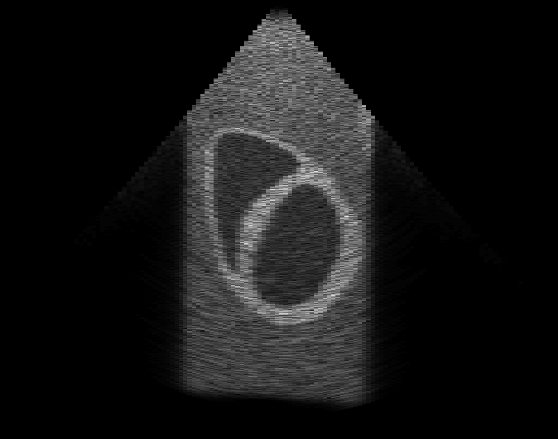

Simulation, text and images courtesy of ANR project US-Tagging.
Contact: O. Bernard, M. Alessandrini.
Total CPU time: 42h. Best execution time obtained in VIP: 4h.
A 2D+t echocardiographic sequence was simulated with an image-based approach. It was obtained by deforming a scattering map with a known motion model. The acquisition was simulated with FIELD-II using a 64-element sectorial probe at 3.75MHz. A sampling frequency of 40MHz was set. The view angle was 66 degrees and the pitch was set to half of the wavelength to avoid grating lobes effects. Both visual appearance and motion are very realistic due to the use of a real sequence as a template. As the true motion for the synthetic sequences is known, this sequence can be used as benchmark for the evaluation of myocardium motion estima- tion algorithms.
| Real sequence | Simulation |  |  |
|---|
Contact: H. Liebgott, A. Marion.
See description in T. Glatard, A. Marion, H. Benoit-Cattin, S. Camarasu-Pop, P. Clarysse, R. Ferreira da Silva, G. Forestier, B. Gibaud, C. Lartizien, H. Liebgott, et al., "Multi-modality image simulation with the virtual imaging platform: Illustration on cardiac MRI and echography", IEEE International Symposium on Biomedical Imaging (ISBI), Barcelona, Spain, in press, 2012 (pdf)
Apical 4 chamber view.
|  |  |
|  |  |
|  |  |